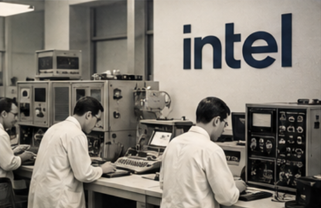
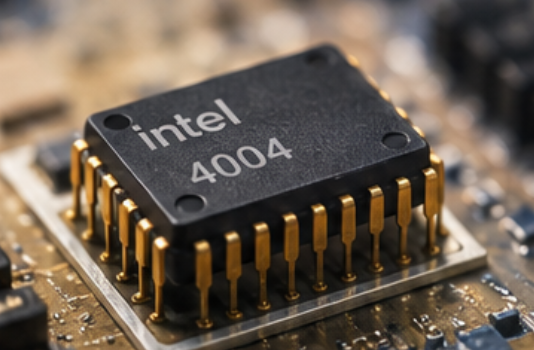
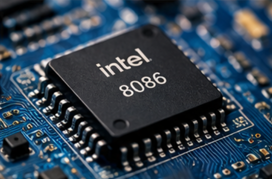
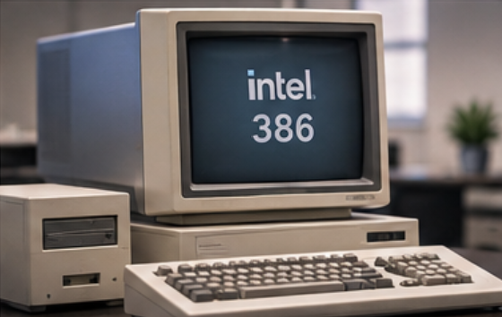
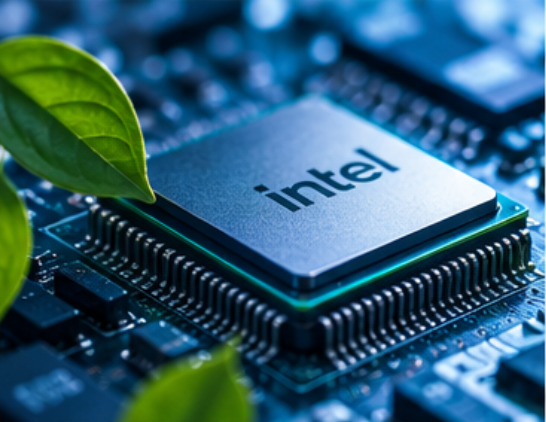
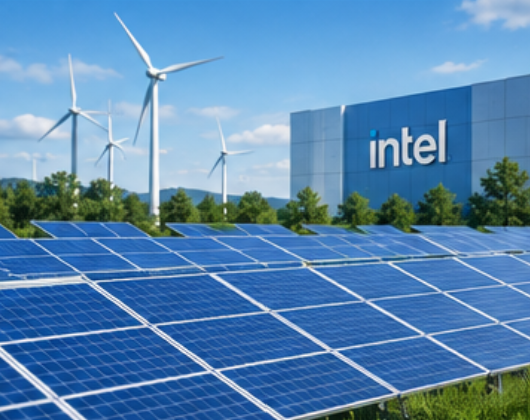
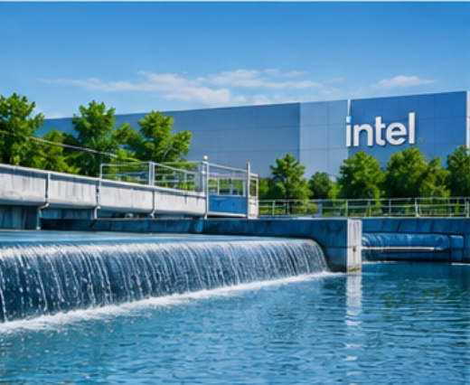
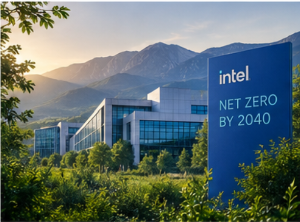

Intel was founded during a transformative period in the semiconductor industry, beginning a journey that would reshape modern computing.
1968
Intel Founded
The Beginning
INNOVATION FOR A BETTER FUTURE
Explore Intel's journey through decades of technological innovation and discover how progress in computing continues to shape a more efficient and sustainable future.
Explore the TimelineINTEL THROUGH THE YEARS
Follow Intel's journey from the beginning of the semiconductor era to ambitious sustainability goals for the future.

Intel was founded during a transformative period in the semiconductor industry, beginning a journey that would reshape modern computing.
The Beginning

The introduction of the Intel 4004 helped bring the power of a computer's processing unit onto a single integrated circuit.
Computing Revolution

Intel introduced the 8086 processor, beginning an architecture that would become enormously influential in personal computing.
Expanding Performance

The Intel 386 processor expanded the possibilities of personal computing with a new generation of processing capability.
A New Computing Era

As computing became more powerful, energy efficiency became increasingly important in the design of processors, devices, and data centers.
Efficiency

Intel expanded its long-term environmental goals with a focus on renewable electricity, responsible manufacturing, water stewardship, and waste reduction.
Environmental Goals

Intel's future sustainability ambitions include advancing renewable energy, conserving water, reducing waste, and creating more responsible manufacturing operations.
Responsible Manufacturing

Intel is working toward a future where technological progress and environmental responsibility can move forward together.
Looking Ahead
Scroll to explore • Hover over a card to learn more
BUILDING WHAT'S NEXT
The future of computing is not only about creating more powerful technology. It is also about finding better ways to manufacture, operate, and innovate responsibly.
Increasing the use of renewable electricity across technology manufacturing and operations.
Conserving water and supporting projects that help restore water resources in surrounding communities.
Reducing waste by reusing materials, recycling resources, and improving manufacturing efficiency.
Working toward lower operational emissions while continuing to advance semiconductor technology.
THE JOURNEY CONTINUES
From the earliest microprocessors to tomorrow's sustainable technologies, every generation creates new opportunities to rethink what computing can achieve.
Back to top ↑